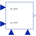

VoltageControllerVoltage controller |

|
Diagram
{kind=link}
Information
This information is part of the Modelica Standard Library maintained by the Modelica Association.
Simple Voltage-Controller
The desired rms values of d- and q-component of the space phasor current in rotor fixed coordinate system are given by inputs "id_rms" and "iq_rms". Using the given rotor position (input "phi"), the actual threephase currents are measured and transformed to the d-q coordinate system. Two PI-controller determine the necessary d- and q- voltages, which are transformed back to threephase (output "y[3]"). They can be used to feed a voltage source which in turn feeds a permanent magnet synchronous machine.
Note: No care is taken for current or voltage limiting, as well as for field weakening.
Parameters (9)
| nout |
Value: m Type: Integer Description: Number of outputs |
|---|---|
| p |
Value: Type: Integer Description: Number of pole pairs |
| fsNominal |
Value: Type: Frequency (Hz) Description: Nominal frequency |
| VsOpenCircuit |
Value: Type: Voltage (V) Description: Open circuit RMS voltage per phase @ fsNominal |
| Rs |
Value: Type: Resistance (Ω) Description: Stator resistance per phase |
| Ld |
Value: Type: Inductance (H) Description: Inductance in d-axis |
| Lq |
Value: Type: Inductance (H) Description: Inductance in q-axis |
| decoupling |
Value: false Type: Boolean Description: Use decoupling network |
| psiM |
Value: sqrt(2) * VsOpenCircuit / (2 * pi * fsNominal) Type: MagneticFlux (Wb) |
Connectors (5)
| y |
Type: RealOutput[nout] Description: Connector of Real output signals |
|
|---|---|---|
| id_rms |
Type: RealInput |
|
| iq_rms |
Type: RealInput |
|
| phi |
Type: RealInput |
|
| iActual |
Type: RealInput[m] |
Components (10)
Used in Examples (2)
|
Modelica.Electrical.Machines.Examples.SynchronousInductionMachines Test example: PermanentMagnetSynchronousInductionMachine fed by FOC |
|
|
Modelica.Magnetic.FundamentalWave.Examples.BasicMachines Test example: PermanentMagnetSynchronousInductionMachine fed by FOC |